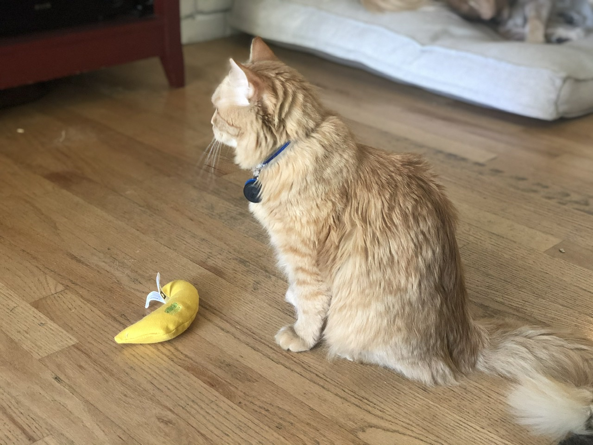

Would you check me twice in a row as Marshal?
What twice
Fair
2nd best check was Crich
He checked me N2 when I was still Unseen
with the whole “i know every role” thing in context i feel like thats fair
had darth not checked vulgard n2 i’d say to check him n3 but like vulgard just said
probably not
Well yeah, he’s unknown, but he’s also bleeding, you suspect he’s faking it?
the whole “n2 convert” thing isnt exactly what people are looking for
bled by the poacher claim
the bleed wasnt AI
now
I wanna ask everyone how I can improve because clearly my play here has been garbage up to the moment I was converted
But I honestly have no idea anymore. Nothing seems to be working 
Let’s lynch the second killer type claim

meow
1 Like
enforcers arent real
also shoutout to N1s flavor
the derps execution was damn hilarious
3 Likes
Don’t powerwolf me if you are friendly with me before, I don’t take well with betrayal that is clear to me 
that was my magnum opus lmfao
3 Likes
I suspected a possible fake there
Common scum tactic to fakeclaim bleed near endgame
i made sure to tell N1 to comment on how “enforcers arent real” and he wrote at least a damn paragraph
what a legend
2 Likes
Agree, you guys were great hosts.
3 Likes
Answered all questions quickly and wrote great flavor. Made the game much more enjoyable.
1 Like
But I didn’t pay that much attention to d3 so might have missed shit